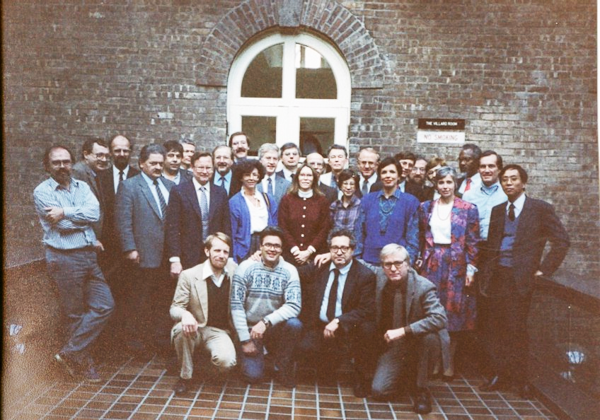
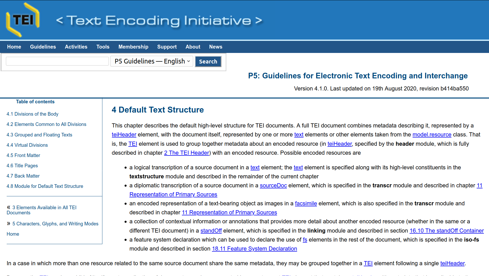
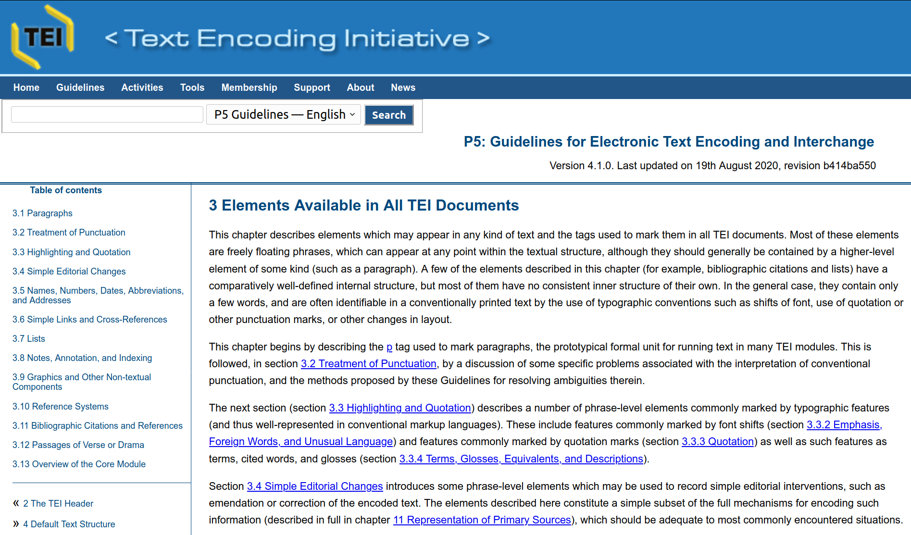
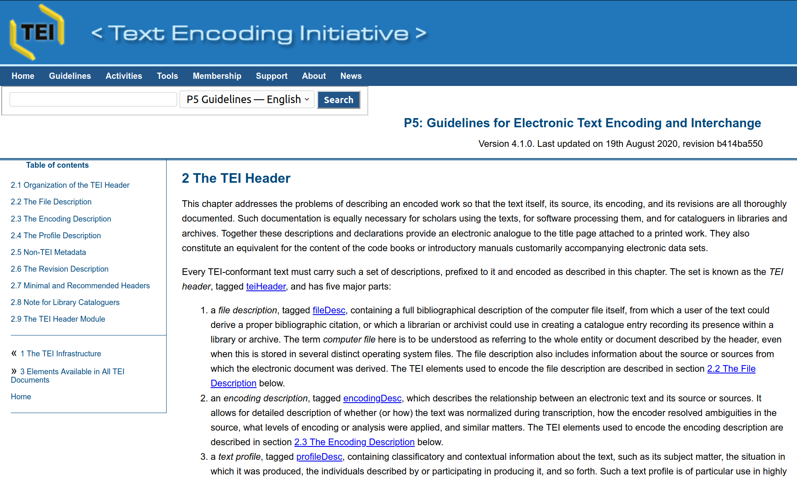
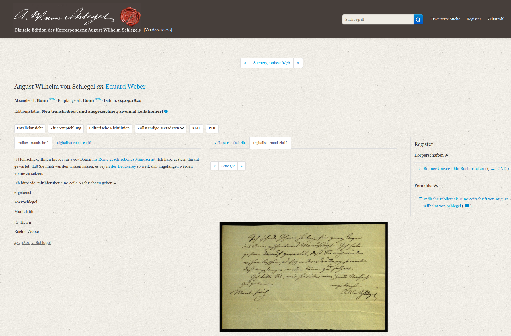
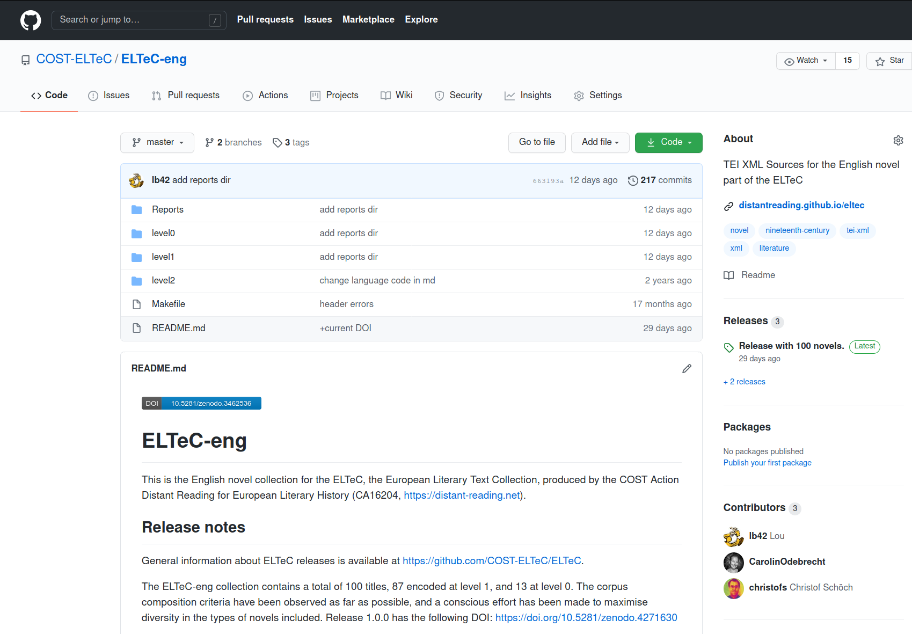

<!doctype html>
<html lang="en">
<head>
<meta charset="utf-8">
<!-- CUSTOMIZE THIS! -->
<title>Einführung in die Digital Humanities</title>
<meta name="author" content="Christof Schöch">
<!-- END -->
<meta name="description" content="Slides">
<meta name="apple-mobile-web-app-capable" content="yes">
<meta name="apple-mobile-web-app-status-bar-style" content="black-translucent">
<meta name="viewport" content="width=device-width, initial-scale=1.0, maximum-scale=1.0, user-scalable=no, minimal-ui">
<link rel="stylesheet" href="css/reveal.css">
<link rel="stylesheet" href="css/theme/simple.css" id="theme">
<!-- Code syntax highlighting -->
<link rel="stylesheet" href="lib/css/zenburn.css">
<!-- Printing and PDF exports -->
<script>
var link = document.createElement( 'link' );
link.rel = 'stylesheet';
link.type = 'text/css';
link.href = window.location.search.match( /print-pdf/gi ) ? 'css/print/pdf.css' : 'css/print/paper.css';
document.getElementsByTagName( 'head' )[0].appendChild( link );
</script>
<!--[if lt IE 9]>
<script src="lib/js/html5shiv.js"></script>
<![endif]-->
</head>


<body>
<div class="reveal">
<div class="slides">
  <section data-markdown="" 
           data-separator="^\n--\n" 
           data-separator-vertical="^\n---\n" 
           data-charset="utf-8" 
           data-background-image="img/basics/uni-trier-mini.png" 
           data-background-size="50px" 
           data-background-position="top right">
<script type="text/template">

# Text Encoding Initiative
<br/>
<br/>
<br/>
<br/>
<br/>
<br/>Vorlesung *Einführung in die Digital Humanities*
<br/>MSc Digital Humanities | Wintersemester 2020/21
<br/>
<br/>Prof. Dr. Christof Schöch
<br/>
<hr/>
<br/>


--
## Überblick
1. Die Text Encoding Initiative
1. Modul: "Default Text Structure"
1. Modul: "Core"
1. Modul: "TEI Header"
1. Beispiele


--
## (1) Die Text Encoding Initiative


---
### Was ist die Text Encoding Initiative?
* Ein Standard zur Kodierung von Texten <!-- .element: class="fragment" data-fragment-index="1" -->
  * Guidelines und Schemata
  * Tools (Roma, OxGarage)
  * Wird seit 1987 entwickelt und gepflegt! 
* Eine Institution zur Pflege des Standards <!-- .element: class="fragment" data-fragment-index="2" -->
  * Mitglieder (Institutionen, Privatpersonen)
  * Board of Directors, (Technical) Council, SIGs
* Eine Community rund um den Standard <!-- .element: class="fragment" data-fragment-index="3" -->
  * Nutzer:innen rund um die Welt
  * Members Meeting and Conference
  * Mailing-Listen
  * TEI Journal


---
### Relevanz der TEI: warum das alles?
* Die TEI ist ein de facto Standard <!-- .element: class="fragment" data-fragment-index="1" -->
  * Langfristige Interpretierbarkeit
  * Langfristige Nachnutzung
  * Texte und ihre Metadaten
  * In XML formuliert

---
### Ziele der TEI
* Universelle Einsetzbarkeit erreichen <!-- .element: class="fragment" data-fragment-index="1" -->
  * allen Sprachen
  * alle Schriftsysteme
  * aus allen Epochen
  * alle denkbaren Textsorten 
  * verschiedene editorische Schulen
* Hilfestellung <!-- .element: class="fragment" data-fragment-index="2" -->
  * für Anfänger: Anwendung der Guidelines
  * für Spezialisten: Anpassung, Weiterentwicklung der Guidelines
  * Ergebnis: flexibler, modularer, vielschichtiger Standard

---
### Geburtsstunde der TEI (1987)

<small>(Poughkeepsie Meeting; Bildquelle: <a href="http://projects.oucs.ox.ac.uk/ENRICH/Deliverables/Training/Graphics/poughkeepsie.png">Oxford University Computing Centre</a>)</small>


---
### Die TEI-Architektur bietet
* Begriffe, Definitionen, Hinweise für hunderte textkritische Phänomene
* Dadurch: enzyklopädische Kodifikation aktueller editorischer Praxis
* Eine Art, darüber nachzudenken, was "Text" ist / was eine "Edition" leisten soll

---
### Der TEI-Werkzeugkasten: Software
* Roma: Schema-Erstellen (TEI-C): http://www.tei-c.org/Roma
* Oxgarage: Dokument-Konversion (TEI-C): https://oxgarage.tei-c.org/
* Publikationstools: Versioning Machine, SADE, TEI Publisher uvm.
* Editoren: oXygen, Atom mit Plugins, jEdit mit Plugins, TextGridLab

--
## (2) Modul: "Default Text Structure"

---
### TEI Guidelines (Module 4)
<br/>

https://tei-c.org/release/doc/tei-p5-doc/en/html/DS.html


---
### Makrostruktur: Grundlegende Elemente
* `<text>`
* `<front>`, `<body>`, `<back>`
* `<group>`
* `<titlePage>`
* `<graphic>`
* `<div>`


---
### Makrostruktur: Beispiel

```
<text xml:id="v147">
  <front>
  [...]
  </front>
  <group>
    <text xml:id="I1914-07-01">
      <body> [... first issue (1 July)...] </body>
    </text>
    <text xml:id="I1914-07-15">
      <body> [... second issue (15 July)...]</body>
    </text>
    [...]
  </group>
  <back> [... index, appendix ...] </back>
</text>
```


--
## (3) Das Modul "Core"


---
### TEI Guidelines (Module 3)
<br/>

https://tei-c.org/release/doc/tei-p5-doc/en/html/CO.html


---
### 50 Elemente, die man fast immer braucht
* Allgemeines <!-- .element: class="fragment" data-fragment-index="1" -->
  * `<p>`, `<pb/>`, `<said>`, `<head>`, `<foreign>`
  * `<date>`, `<name>`, `<time>`
* Textsorten-Spezifisches <!-- .element: class="fragment" data-fragment-index="2" -->
  * Verstext: `<lg>` (linegroup), `<l>` (line)
  * Theater: u.a.: `<sp>` (speech), `<speaker>`, `<stage>`
* Sonstiges <!-- .element: class="fragment" data-fragment-index="3" -->
  * Bibliographische Angaben: `<bibl>`, `<author>`, `<title>`, `<publisher>`, `<pubPlace>` 
  * Editorische Interventionen: u.a. `<abbr>` und `<expan>`, `<corr>` und `<reg>`


---
### Einige globale Attribute
* Einige Merkmale lassen sich auf (fast) alles anwenden <!-- .element: class="fragment" data-fragment-index="1" -->
  * Identität
  * Sprache
  * Aussehen
* TEI bietet dafür "globale Attribute" an <!-- .element: class="fragment" data-fragment-index="2" -->
  * `@type` - Klassifikation
  * `@xml:id` - "unique identifier"
  * `@n` – Name oder Nummer
  * `@xml:lang` – Sprache (nach ISO Standard)


---
### Beispiel: Versdrama
```
<sp>
  <speaker>Mephistopheles</speaker>
  <lg type="stanza">
     <l>Ich möcht’ mich gleich dem Teufel übergeben,</l>
     <l>Wenn ich nur selbst kein Teufel wär’!</l>
  </lg>
</sp>
<sp>
  <speaker>Faust</speaker>
  <lg type="stanza">
     <l>Hat sich dir was im Kopf verschoben?</l>
     <l>Dich kleidet’s, wie ein Rasender zu toben!</l>
  </lg>
</sp>
```


---
### Beispiel: Bibliographische Angabe

```
<biblFull>
  <titleStmt>
    <title>Envisioning Information</title>
    <author>Tufte, Edward R[olf]</author>
  </titleStmt>
  <extent>126 pp.</extent>
  <publicationStmt>
    <publisher>Graphics Press</publisher>
    <pubPlace>Cheshire, Conn. USA</pubPlace>
    <date>1990</date>
  </publicationStmt>
</biblFull>
```


--
## (4) Das Modul "teiHeader"


---
### TEI Guidelines (Module 2)


https://tei-c.org/release/doc/tei-p5-doc/en/html/HD.html


---
### Grundlegende Metadaten
* Identifikation der Ressource: "Um was handelt es sich?"
* Zuordnung von Verantwortlichkeiten: "Wer hat wann was gemacht?"
* Angabe der Quelle(n): "Was wurde woher genommen?"
* Publikations-Angaben: "Wie wird diese Ressource zugänglich gemacht?"
* Dokumentation der Kodierungspraxis: "Was bedeutet der Markup?"

---
### TEI Header: 4 Komponenten
* `<fileDesc>` (file description)
  * notwendig (als einzige Komponente)
  * bibliographische Beschreibung des Dokuments
* `<encodingDesc>` (encoding description)
  * Beziehung zwischen kodiertem Text und Quelle
* `<profileDesc>` (text-profile description)
  * Viele weitere Aspekte: Sprache, Kontext, etc.
* `<revisionDesc>` (revision description)
  * Fasst den Bearbeitungsverlauf des Dokuments zusammen.

---
### Obligatorische Teile der `<fileDesc>`
* `<titleStmt>` mit `<title>`
* `<publicationStmt>`: Aussage zum Status des Dokuments bzgl. Publikation
* `<sourceDesc>`: Beschreibung der Quelle

---
### Beispiel: minimaler Header
```
<teiHeader>
  <fileDesc>
    <titleStmt>
      <title>My 'Strange Meeting' document</title>
    </titleStmt>
    <publicationStmt>
      <p>An exercise for learning TEI.</p>
    </publicationStmt>
    <sourceDesc>
      <p>The primary resource of this file is <ref
      target="http://www.oucs.ox.ac.uk/ww1lit/
      collections/item/3350"> Strange Meeting</ref> from
      Jon Stallworthy's edition, available on the WWI
      Poetry Digital Archive. </p>
    </sourceDesc>
  </fileDesc>
</teiHeader>
```


---
### Erweiterungen für das `<titleStmt>`
* Standard-Rollen
  * `<author>` - Autor des kodierten Texts oder des „born digital“ Dokuments
  * `<editor>` - Herausgeber des kodierten Texts
* Für Spezifischere Rollen
  * `<respStmt>` mit `<resp>` und `<name>`
  * `<resp>` - frei definierbare Aufgabe, bspw. "Transkription" oder "Kodierung der Named Entities"


---
### Beispiel `<titleStmt>`

```
  <teiHeader>
    <fileDesc>
      <titleStmt>
        <title>Monster: eine XML-Edition</title>
        <author>Wir sind Helden</author>
        <editor>Franz Sahle</editor>
        <respStmt>
          <resp>Kodierung</resp>
          <name>Patrick Fischer</name>
        </resptStmt>
      </titleStmt>
      [...]
    </fileDesc>
  </teiHeader>
```

--
## Beispieldaten

---
### Brief aus der A.W.-Schlegel-Edition


https://august-wilhelm-schlegel.de/briefedigital/letters/xml/7621


---
### Roman aus ELTeC-eng (Gaskell)


https://github.com/COST-ELTeC/ELTeC-eng/blob/master/level1/ENG18482_Gaskell.xml

--
## Abschluss


---
### Lektürehinweise
<small>

**Referenzlektüre**
* Christof Schöch: "Ein digitales Textformat für die Literaturwissenschaften: die Richtlinien der Text Encoding Initiative und ihr Nutzen für Textedition und Textanalyse". *Romanische Studien* 4, 2016. http://romanischestudien.de/index.php/rst/article/view/58/517 (Open Access)

**Weitere Empfehlungen**
* Lou Burnard: *What is the Text Encoding Initiative?* Marseille: Open Edition Press, 2014. https://books.openedition.org/oep/679?lang=de (Open Access)

</small>


---
<br/>
<br/>
<br/>
<br/>
<br/>Christof Schöch, 2020
<br/>http://www.christof-schoech.de
<br/>
<hr/>
Lizenz: [Creative Commons Attribution 4.0](https://creativecommons.org/licenses/by/4.0/)
<br/>


</script>

<!-- DON'T TOUCH UNLESS YOU KNOW WHAT YOU'RE DOING :-) -->
</div>
<script src="lib/js/head.min.js"></script>
<script src="js/reveal.js"></script>
<script>
// Full list of configuration options available at:
// https://github.com/hakimel/reveal.js#configuration
Reveal.initialize({
    controls: true,
    progress: true,
    history: true,
    center: true,
    transition: 'slide', // none/fade/slide/convex/concave/zoom
    // Optional reveal.js plugins
    dependencies: [
        { src: 'lib/js/classList.js', condition: function() { return !document.body.classList; } },
        { src: 'plugin/markdown/marked.js', condition: function() { return !!document.querySelector( '[data-markdown]' ); } },
        { src: 'plugin/markdown/markdown.js', condition: function() { return !!document.querySelector( '[data-markdown]' ); } },
        { src: 'plugin/highlight/highlight.js', async: true, callback: function() { hljs.initHighlightingOnLoad(); } },
        { src: 'plugin/zoom-js/zoom.js', async: true },
        { src: 'plugin/notes/notes.js', async: true }
        ]
    });
Reveal.configure({ slideNumber: true });
</script>
</body>
</html>
